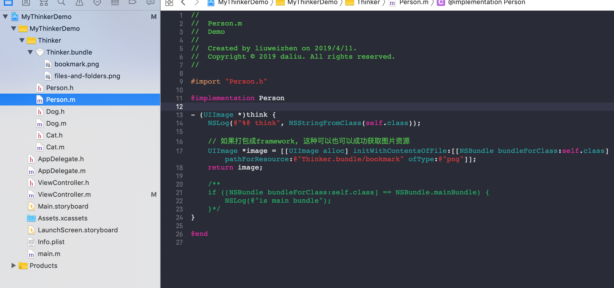
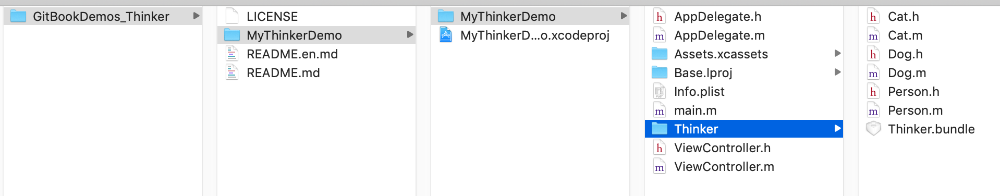
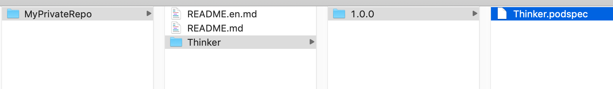

私有Pod
总体流程：creating a private repository, letting CocoaPods know where to find it and adding the podspecs to the repository.
1. 创建私有索引库
安装Cocoapods会到官方的索引库，生成本地索引库。使用Pod install时，默认情况下，会去更新本地索引库，当然了可以在后面添加--no-repo-update忽略更新。
这个本地索引库地址默认为: ~/.cocoapods/repos/
这个索引库其实就是存储了一个个库的podspec描述文件。使用pod repo查看本地索引库：
$ pod repo
master
- Type: git (master)
- URL: https://github.com/CocoaPods/Specs.git # 公共索引库的地址
- Path: /Users/liuweizhen/.cocoapods/repos/master
上面的URL地址就是公共索引库的地址，里面存放着很多库的podspec索引文件。为了使我们私有的库也支持cocoapods就需要创建私有的索引库。
比如我在码云上新建一个私有仓库MyPrivateRepo, 接下来将私有库添加到本地：
pod repo add MyPrivateRepo https://gitee.com/aCommonChinese/MyPrivteRepo.git
再用pod repo查看本地pod索引库:
$ pod repo
master
- Type: git (master)
- URL: https://github.com/CocoaPods/Specs.git
- Path: /Users/banma-623/.cocoapods/repos/master
MyPrivateRepo
- Type: git (master)
- URL: https://gitee.com/aCommonChinese/MyPrivteRepo.git
- Path: /Users/liuweizhen/.cocoapods/repos/MyPrivateRepo
至此，本地私有索引库创建完成。
2. 创建需要引用的资源
接下来我们建一个git项目：GitBookDemos_Thinker, 在此目录下建个工程  
然后上传到git上：
git add *
git commit -m "Init"
git push
git tag 1.0.0
git push --tag
3. 创建podspec文件，引用资源
pod spec create Thinker
这会生成Thinker.podspec文件，内容：
Pod::Spec.new do |s|
s.name = 'Thinker' #此名字应当和文件名相同，即文件名为Thinker.podspec, 此name当为Thinker
s.version = '1.0.0'
s.summary = 'pod summary here'
s.homepage = 'https://gitee.com/aCommonChinese/GitBookDemos_Thinker/'
s.license = 'MIT'
s.authors = {'aCommonChinese' => 'liuxing8807@126.com'}
s.platform = :ios, '7.0'
s.source = {:git => "https://gitee.com/aCommonChinese/GitBookDemos_Thinker.git", :tag => s.version}
s.source_files = 'MyThinkerDemo/MyThinkerDemo/Thinker/*.{h,m}'
s.resource = 'MyThinkerDemo/MyThinkerDemo/Thinker/Thinker.bundle'
s.frameworks = "UIKit"
s.requires_arc = true
end
4. 把podspec文件上传到私有索引库
可以参见：提交本地Pod
上传之前先检测一下此podspec是否合法：
pod spec lint Thinker.podspec，验证通过后上传到私有库：
pod repo push MyPrivateRepo
# 如果有多个，可指定名字：pod repo push MyPrivateRepo Thinker.podspec
这样上传之后我们可以打开：open ~/.cocoapods/repos, 发现：

5. 使用私有库
使用前可以通过pod search查询：
pod search Thinker
-> Thinker (1.0.0)
pod summary here
pod 'Thinker', '~> 1.0.0'
- Homepage: https://gitee.com/aCommonChinese/GitBookDemos_Thinker/
- Source: https://gitee.com/aCommonChinese/GitBookDemos_Thinker.git
- Versions: 1.0.0 [MyPrivateRepo repo]
接下来新建一项目，编辑Podfile：
source 'https://github.com/CocoaPods/Specs.git' #官方source
source 'https://gitee.com/aCommonChinese/MyPrivteRepo.git' #注意此source必须添加，否则找不到Thinker
platform :ios, '7.0'
target 'UseThinkerDemo' do
use_frameworks!
#pod 'AFNetworking'
pod 'Thinker' # 注：这里不需要指定版本号，否则：[!] A dependency with an external source may not specify version requirements (Thinker).
end
执行pod install，使用即可：
#import <Thinker/Person.h>
...
- (void)viewDidLoad {
[super viewDidLoad];
// Do any additional setup after loading the view.
Person *p = [[Person alloc] init];
self.imageView.image = [p think];
}
6. 移除私有库
pod repo remove [name]
遇到的错误
使用pod search可以找到，但使用pod install时出现：Unable to find a specification for ...
参见：https://cloud.tencent.com/developer/article/1336298
参考链接：
https://blog.csdn.net/lincsdnnet/article/details/79836974 https://cloud.tencent.com/developer/article/1336298